# this is needed only for demonstration purposes
import matplotlib.pyplot as pltExample directed graphs
Various functions to generate examples of directed graphs (DAGs), mainly graphs from various related works
Create crown DAG known as \(S_3^0\) graph
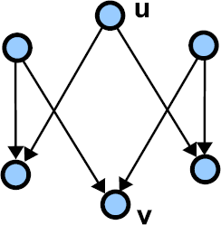
Generate crown DAG (Directed Acyclic Graph), also known as \(S_3^0\) graph.
This graph is taken from FELINE paper (2014), where it is used to show falsely-implied path or false-positive of the FELINE index.
This graph is shown in Figure 4 of the FELINE paper.
crown_DAG
crown_DAG ()
Returns crown DAG known as S_3^0 graph
Draw the crown DAG (crown_DAG())
Draw the 6-nodes crown DAG, known as \(S_3^0\) graph, using [automatic] shell layout:
#@title Draw the $S_3^0$ graph using [automatic] shell layout
DG=crown_DAG()
nx.draw_shell(DG,with_labels=True,node_size=500,width=2.0)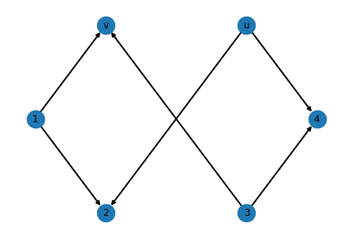
Drawing the crown DAG with circular layout results in the same plot as with shell layout, shown above.
Draw the 6-nodes crown DAG, known as \(S_3^0\) graph, using the default spring layout positioning:
DG=crown_DAG()
nx.draw(DG,with_labels=True,node_size=500,width=2.0)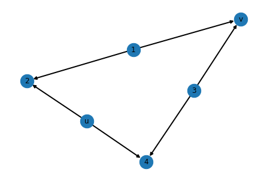
#DG=crown_DAG()
#nx.draw_kamada_kawai(DG,with_labels=True,node_size=500,width=2.0)Draw the 6-nodes crown DAG, known as the \(S_3^0\) graph, using automatic bipartite layout.
This is a similar layout to the one used in left side of Figure 4 in the FELINE paper, just with changed order of nodes in each of sets of vertices (each partition).
DG=crown_DAG()
nx.draw(DG,pos=nx.bipartite_layout(DG,[1,'u',3],align='horizontal'),
with_labels=True,node_size=500,width=2.0)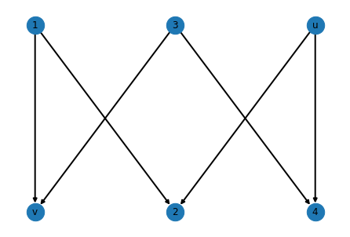
Draw the crown DAG known as \(S_3^0\) graph using weak dominance drawing.
This is the same layout as the one used on right size of Figure 4 in the FELINE paper. It shows example of exception between nodes \(u\) and \(v\). The orange arrow is a falsely implied path or a false-positive for the FELINE index.
It is important to notice that some graphs, such as \(S_3^0\), do not admit a 2D index which is free of false-positives. The weak dominance drawing shown below has the smallest possible number of false-positives for this graph.
#@title Draw the $S_3^0$ graph using weak dominance drawing
from matplotlib.patches import Rectangle, FancyArrowPatch
ax=plt.gca()
ax.add_patch(Rectangle((2,2), 5, 5, facecolor="lightgrey",alpha=0.5))
ax.add_patch(
FancyArrowPatch((2,2),(5,5),
shrinkA=15,shrinkB=15,
arrowstyle='fancy',mutation_scale=18,
linestyle='dashed',hatch='\\',color='orange')
)
plt.grid(True)
plt.xlabel('x')
plt.ylabel('y')
plt.title('$S_3^0$ graph')
plt.xlim(xmin=0,xmax=7)
plt.ylim(ymin=0,ymax=7)
DG=crown_DAG()
DG.pos={1:(1,4),2:(3,6),'u':(2,2),3:(4,1),4:(6,3),'v':(5,5)}
nx.draw_networkx(DG,pos=DG.pos,
node_size=500,width=2.0,label='$S_3^0$ graph')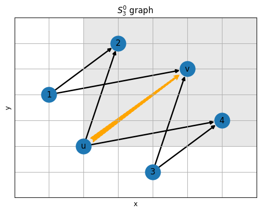
Create the small DAG (example in Figure 2 in FELINE paper)
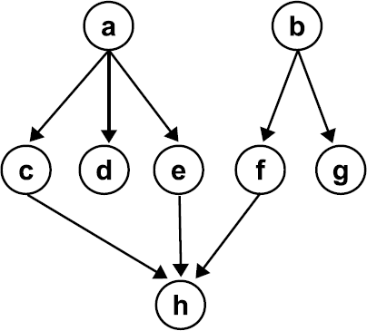
An example of a small DAG from FELINE paper, used in various places
small_DAG_FELINE
small_DAG_FELINE ()
Create small DAG (example in Figure 2 in FELINE paper)
Draw a small DAG example (small_DAG_FELINE())
Draw using default spring layout (somewhat random)
sd=small_DAG_FELINE()
nx.draw(sd,with_labels=True,node_size=500,width=2.0)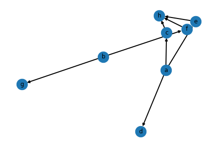
Draw using node positions created with the help of pydot module and Graphviz.
We use ‘dot’ layout algorithm, which creates “hierarchical” or layered drawings of directed graphs. This is the default tool in Graphviz to use if edges have directionality (like in this case).
try:
import pydot
sd=small_DAG_FELINE()
pos=nx.drawing.nx_pydot.pydot_layout(sd, prog='dot')
nx.draw(sd, pos=pos, with_labels=True,
node_size=500,width=2.0,node_color='#FF7F00')
except ModuleNotFoundError:
print("'pydot' module not installed")'pydot' module not installedDraw a small DAG as shown in Figure 2 in the FELINE paper (levels-based, if we use levels starting from sources)
#@title Draw a small DAG, as in Figure 2 (source levels-based)
limits = plt.axis('off')
sd=small_DAG_FELINE()
nx.draw_networkx(sd,
pos={'a':(2,3),'b':(4.5,3),'c':(1,2),'d':(2,2),'e':(3,2),'f':(4,2),'g':(5,2),'h':(3,1)},
node_size=500,width=2.0,node_color='y')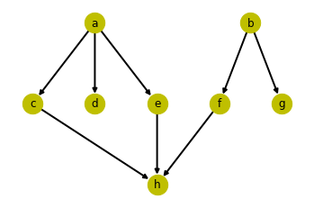
Draw a small DAG from FELINE paper using weak dominance drawing
#@title Draw small DAG using weak dominance drawing
from matplotlib.patches import Rectangle
sd=small_DAG_FELINE()
sd.xy=dict(zip([chr(c) for c in range(ord('a'),ord('h')+1)],
zip([1,5,2,3,4,6,8,7],[4,1,7,6,5,3,2,8])))
ax=plt.gca()
ax.add_patch(Rectangle(sd.xy['a'], 8, 5, facecolor="lightgrey",alpha=0.4))
for node in sd.nodes:
if sd.out_degree(node) == 0:
continue
(vx,vy)=sd.xy[node]
#print(node,vx,vy)
plt.axhline(xmin=vx/9.0,y=vy,color='0.5', ls=':')
plt.axvline(x=vx,ymin=vy/9.0,color='0.7', ls=':')
plt.grid(True)
plt.xlabel('x')
plt.ylabel('y')
plt.title('Small DAG (Fig. 2 of FELINE paper): example of dominance regions')
plt.xlim(xmin=0,xmax=9)
plt.ylim(ymin=0,ymax=9)
nx.draw_networkx(sd,pos=sd.xy,
node_size=500,width=2.0,node_color='y')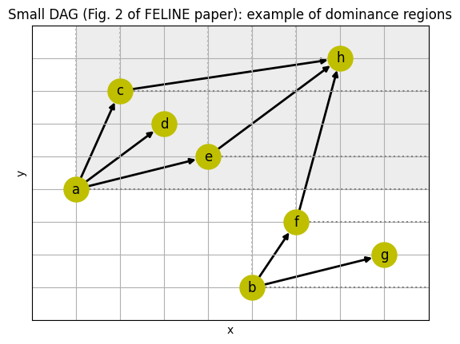
The above figure shows example of dominance regions for the drawing of a small DAG (Figure 3 of FELINE paper).
Create a didactic example of a DAG (a tree)
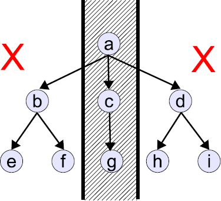
Creates a tree DAG, used as a didactic example in the FELINE paper, where it is shown in Figure 6
tree_DAG
tree_DAG ()
Create tree DAG (‘didactic example’ in Figure 6 in FELINE paper)
The created tree graph has a single source node with out-degree of 3, its 3 out-neighbours have out-degrees, respectively, of 2, 1 and 2. Out-neighbours of those nodes are sink nodes with out-degree of 0. The tree has maximum level of 3.
Below there is ASCII-art rendering of this graph; edges point downward
'a'
__/|\__
/ | 'b' 'c' 'd'
/ \ | / / | | | 'e' 'f' 'g' 'h' 'i'Draw a tree DAG (didactic example from Figure 6 in FELINE paper) - tree_DAG()
Draw using node positions created with the help of pydot module and Graphviz, if it is present (installed).
We use ‘dot’ layout algorithm, which creates “hierarchical” or layered drawings of directed graphs. This is the default tool in Graphviz to use if edges have directionality (like in this case).
try:
import pydot
de=tree_DAG()
pos=nx.drawing.nx_pydot.pydot_layout(de, prog='dot')
nx.draw(de, pos=pos, with_labels=True,
node_size=500,width=2.0,node_color='#7DF9FF')
except ModuleNotFoundError:
print("'pydot' module not installed")'pydot' module not installedDraw a didactic example of a DAG, as in Figure 6 (levels-based) of FELINE paper
#@title Draw a didactic example of a DAG, as in Figure 6 (levels-based)
from matplotlib.patches import Rectangle
from matplotlib.lines import Line2D
de=tree_DAG()
plt.axis('off')
de.tree={
'a':(3,3),
'b':(1.5,2),'c':(3,2),'d':(4.5,2),
'e':(1,1),'f':(2,1),'g':(3,1),'h':(4,1),'i':(5,1)
}
ax=plt.gca()
ax.add_patch(Rectangle((2.5,0.5), 1, 3, facecolor="grey",alpha=0.3))
ax.add_line(Line2D([2.5,2.5], [0.5,3.5],lw=5., alpha=0.3))
ax.add_line(Line2D([3.5,3.5], [0.5,3.5],lw=5., alpha=0.3))
nx.draw_networkx(de,
pos=de.tree,
node_size=500,width=2.0,node_color='c')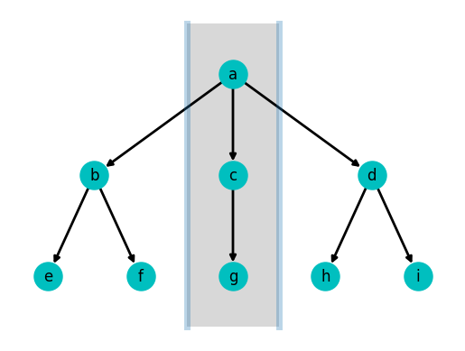
This figure shows a didactic example of a DAG and its two topological orderings obtained by Algorithm 1 in FELINE-index paper.
Given a query \(r(a,g)\), all vertices after \(g\) in first and second table are discarded (on the left and on the right of \(g\)). This strategy reduces the search space to only vertices \(a\), \(c\) and \(g\).
Draw a didactic example of a DAG (tree DAG) using weak dominance drawing
#@title Draw a didactic example of a DAG using weak dominance drawing
from matplotlib.patches import Rectangle
from matplotlib.lines import Line2D
de=tree_DAG()
o1=list('abefcgdhi')
o2=list('adihcgbfe')
de.pos={v: (x,0) for (x,v) in enumerate(o1)}
for (y,v) in enumerate(o2):
de.pos[v]=(de.pos[v][0],y)
ax=plt.gca()
ax.add_patch(Rectangle(de.pos['a'],
de.pos['g'][0] - de.pos['a'][0],
de.pos['g'][1] - de.pos['a'][1],
facecolor="grey",alpha=0.35))
ax.add_line(Line2D([de.pos['g'][0],de.pos['g'][0]],
[de.pos['g'][1],de.pos['a'][1]],
lw=5., alpha=0.3))
ax.add_line(Line2D([de.pos['g'][0],de.pos['a'][0]],
[de.pos['g'][1],de.pos['g'][1]],
lw=5., alpha=0.3))
plt.axvline(x=de.pos['a'][1],color='0.5', ls=':')
plt.axhline(y=de.pos['a'][0],color='0.5', ls=':')
plt.grid(True)
plt.xlabel('x')
plt.ylabel('y')
plt.title('Didactic example of a DAG: search space of FELINE')
plt.xlim(xmin=-1,xmax=9)
plt.ylim(ymin=-1,ymax=9)
nx.draw_networkx(de,pos=de.pos,
node_size=500,width=2.0,node_color='c')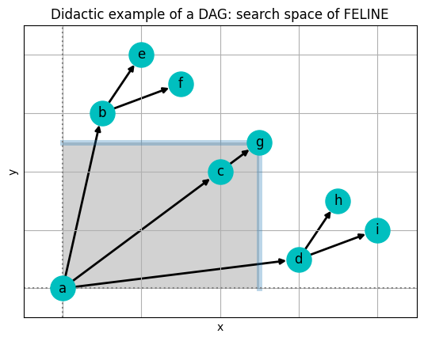
NOTE: we are skipping figure titled ‘Didactic example of a DAG: search space of FERRARI(topological ordering x)’ in Reachability labels for version control graphs.ipynb. If it is to be added, it would be added in the notebook describing various reachability indices.
Create the levels example DAG (from Figure 9 in FELINE paper)
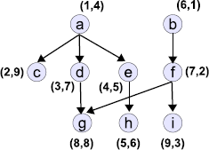
This is the graph created to help understand the applicability of level filter. The example shows that a false-positive query \(r(h, g)\) could be pruned in constant time just by verifying that \(h\) and \(g\) are at the same level.
The numbers represents the coordinates attributed by FELINE algorithm; the vertical position of vertex corresponds to its forward topological level.
levels_DAG_FELINE
levels_DAG_FELINE ()
Create graph from Figure 9 in FELINE paper, used to show levels-filter
Draw levels-filter example (from Figure 9 in FELINE paper) - levels_DAG_FELINE()
Draw the graph as it was shown in Figure 9 of the FELINE paper
lf=levels_DAG_FELINE()
# forwards level
lf.lvl={
'g':0,'h':0,'i':0,
'c':1,'d':1,'e':1,'f':1,
'a':2,'b':2
}
# coordinates attributed by FELINE
lf.fel={
'a':(1,4),'b':(6,1),'c':(2,9),'d':(3,7),'e':(4,5),
'f':(7,2),'g':(8,8),'h':(5,6),'i':(9,3),
}
#@title Draw an example DAG for levels-filter, as in Figure 9 of FELINE paper (levels-based)
# positions in Figure 9 of FELINE paper
lf.tree={
'a':(2,2),'b':(4,2),
'c':(1,1),'d':(2,1),'e':(3,1),'f':(4,1),
'g':(2,0),'h':(3,0),'i':(4,0)
}
#plt.axis('off')
plt.ylabel('forward topological level')
#plt.subplots_adjust(left=0,right=1.2)
plt.xlim(left=0.75,right=4.5)
nx.draw_networkx(lf,
pos=lf.tree,
nodelist=list(lf.lvl.keys()),
node_color=list(lf.lvl.values()),
cmap=plt.cm.Greens,
vmin=-2,vmax=5,
node_size=500,width=2.0)
labels=nx.draw_networkx_labels(lf,
pos={k: (v[0]+0.31,v[1]-0.06) for (k,v) in lf.tree.items()},
labels=lf.fel)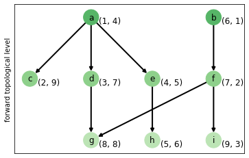
lf=levels_DAG_FELINE()
# forwards level
lf.lvl={
'g':0,'h':0,'i':0,
'c':1,'d':1,'e':1,'f':1,
'a':2,'b':2
}
# coordinates attributed by FELINE
lf.fel={
'a':(1,4),'b':(6,1),'c':(2,9),'d':(3,7),'e':(4,5),
'f':(7,2),'g':(8,8),'h':(5,6),'i':(9,3),
}
#@title Draw an example DAG for levels-filter, as in Figure 9 of FELINE paper (levels-based)
# positions in Figure 9 of FELINE paper
lf.tree={
'a':(2,2),'b':(4,2),
'c':(1,1),'d':(2,1),'e':(3,1),'f':(4,1),
'g':(2,0),'h':(3,0),'i':(4,0)
}
#@title Draw an example DAG for levels-filter, backwards levels based
# correction from forward to backward topological levels
lf.lvl['c']=0
lf.tree['c']=(1,0)
# configure plot
#plt.axis('off')
plt.ylabel('backward topological level')
#plt.subplots_adjust(left=0,right=1.2)
plt.xlim(left=0.75,right=4.5)
nx.draw_networkx(lf,
pos=lf.tree,
nodelist=list(lf.lvl.keys()),
node_color=list(lf.lvl.values()),
cmap=plt.cm.Greens,
vmin=-2,vmax=5,
node_size=500,width=2.0)
labels=nx.draw_networkx_labels(lf,
pos={k: (v[0]+0.21,v[1]-0.04)
for (k,v) in lf.tree.items()},
labels=lf.fel)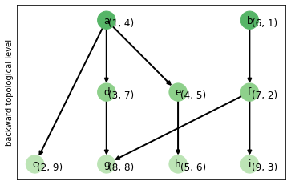
Draw using node positions created with the help of pydot module and Graphviz, if it is present (installed).
try:
import pydot
lf=levels_DAG_FELINE()
pos=nx.drawing.nx_pydot.pydot_layout(lf, prog='dot')
nx.draw(lf, pos=pos, with_labels=True,
node_size=400,width=2.0,node_color='#66ff66')
except ModuleNotFoundError:
print("'pydot' module not installed")'pydot' module not installedDraw using weak dominance drawing (coordinates attributed by FELINE)
#@title Draw an example DAG for levels-filter, using weak dominance drawing
from matplotlib.patches import Rectangle, FancyArrowPatch
from matplotlib.lines import Line2D
lf=levels_DAG_FELINE()
# backward level
lf.lvl={
'c':0,'g':0,'h':0,'i':0,
'd':1,'e':1,'f':1,
'a':2,'b':2
}
# coordinates attributed by FELINE
lf.fel={
'a':(1,4),'b':(6,1),'c':(2,9),'d':(3,7),'e':(4,5),
'f':(7,2),'g':(8,8),'h':(5,6),'i':(9,3),
}
ax=plt.gca()
ax.add_patch(Rectangle(lf.fel['h'],
#lf.fel['g'][0] - lf.fel['h'][0],
#lf.fel['g'][1] - lf.fel['h'][1],
10 - lf.fel['h'][0],
10 - lf.fel['h'][1],
facecolor="grey",alpha=0.25))
ax.add_patch(
FancyArrowPatch(lf.fel['h'],lf.fel['g'],
shrinkA=15,shrinkB=15,
arrowstyle='fancy',mutation_scale=18,
linestyle='dashed',hatch='\\',color='orange')
)
#plt.axvline(x=lf.fel['h'][0],color='0.4', ls=':')
#plt.axhline(y=lf.fel['h'][1],color='0.4', ls=':')
plt.grid(True)
plt.xlabel('x')
plt.ylabel('y')
plt.title('Example of false-implied path pruned by level filter')
plt.xlim(xmin=-0.5,xmax=10)
plt.ylim(ymin= 0.0,ymax=10)
nx.draw_networkx(lf,pos=lf.fel,
node_size=500,width=2.0,
nodelist=list(lf.lvl.keys()),
edgecolors='k',
node_color=list(lf.lvl.values()),
cmap=plt.cm.Greens,
vmin=-2,vmax=5)
labels=nx.draw_networkx_labels(lf,
pos={k: (v[0]-0.68,v[1]+0.36) for (k,v) in lf.fel.items()},
labels={k:'$l_'+str(k)+'='+str(l)+'$'
for (k,l) in lf.lvl.items()})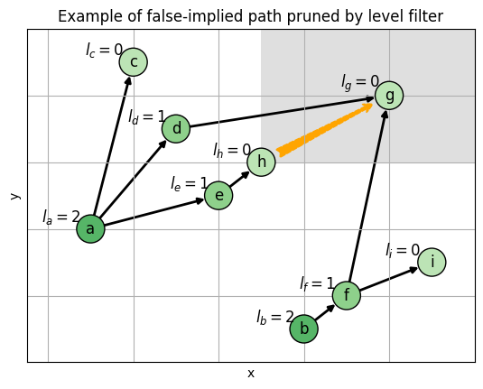
Example where the vertex \(h\) does not reach \(g\), but there is false-implied path (orange) between them (\(g\) is in domination area of \(h\), shown as the gray area). However, \(g\) and \(h\) are in the same level: \(l_g = l_h = 0\), and the level filter prunes the search. The labels and the color represents level of vertex.
Create example RCH graph (from PReaCH paper)
Create an example DAG used among others for showing how Reachability Contraction Hierarchies (RCH) labeling works. This graph is shown on Figures 1 and 2 in the PReaCH paper.
The graph as shown in Figure 1 in the PReaCH paper (preprint) can be seen below:
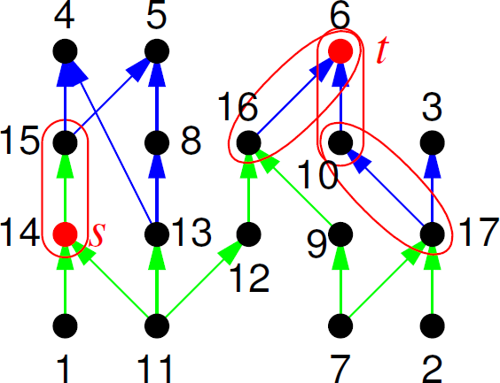
Caption: Example RCH. Edges in the forward search space are light green, and those in the backward search space are dark blue. The search spaces for a query from \(s\) to \(t\) are circled. Node labels specify the RCH node ordering.
RCH_graph
RCH_graph ()
Create RCH example graph (example in Figure 1 and 2 in PReaCH paper)
Positions of nodes in the drawing from Figure 1 and 2 in PReaCH paper is stored in pos attribute of returned graph object.
Backward topological levels (i.e. with level equal to 0 for nodes with no outgoing edges, that is with out-degree of 0) are stored in lvl attribute of returned graph object.
Draw RCH graph (from Figures 1 and 2 in the PReaCH paper) - RCH_graph()
Draw using node positions created with the help of pydot module and Graphviz, if it is present (installed).
We use ‘dot’ layout algorithm, which creates “hierarchical” or layered drawings of directed graphs. This is the default tool in Graphviz to use if edges have directionality (like in this case).
try:
import pydot
ch=RCH_graph()
pos=nx.drawing.nx_pydot.pydot_layout(ch, prog='dot')
nx.draw(ch, pos=pos, with_labels=True,
node_size=500,width=2.0,node_color='#ee88ff')
except ModuleNotFoundError:
print("'pydot' module not installed")'pydot' module not installedch=RCH_graph()
plt.axis("off")
plt.title('Example graph from PReaCH paper (Figures 1 and 2)\ndraw reversed - with arrows pointing down')
nx.draw_networkx(ch,pos={key:(value[0],-value[1]) for (key,value) in ch.pos.items()},
node_size=500,width=2.0,node_color='#dd44ff')
plt.show()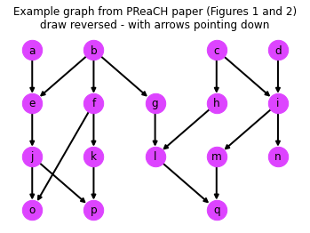
ch=RCH_graph()
plt.axis("off")
plt.title('Example graph from PReaCH paper (Figures 1 and 2)')
nx.draw_networkx(ch,pos=ch.pos,
node_size=500,width=2.0,node_color='m')
plt.show()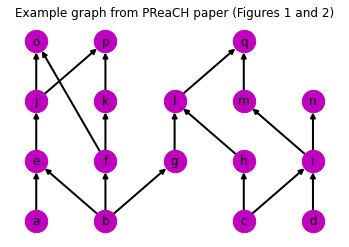
Create example commit graph (from Stolee blog posts)
An example commit graph from the series of blog posts “Supercharging the Git Commit Graph” by Derrick Stolee.
In the drawing of this graph below arrows (directed edges) point from right to left.
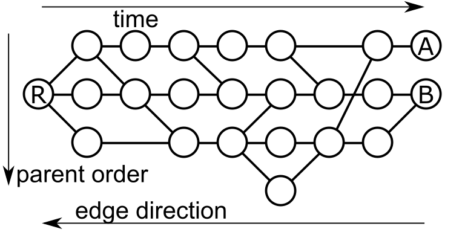
commit_graph_Stolee
commit_graph_Stolee ()
Create an example of Git commit graph
This graph is taken from Derrick Stolee series of blog posts “Supercharging the Git Commit Graph”.
Positions of nodes in the drawing from commit-graph-example.png is stored in pos attribute of returned graph object.
Draw an example commit graph (commit_graph_Stolee())
Draw using node positions created with the help of pydot module and Graphviz, using ‘dot’ layout algorithm, if the module is present (installed).
The resulting positioning is transformed from vertical to horizontal, and flipped along horizontal axis to better match the original drawing in the Stolee blog post(s).
try:
import pydot
cg=commit_graph_Stolee()
pos=nx.drawing.nx_pydot.pydot_layout(cg, prog='dot')
nx.draw(cg, pos={n:(y,-x) for (n,(x,y)) in pos.items()}, with_labels=True,
node_size=500,width=2.0,node_color='#ff9988')
except ModuleNotFoundError:
print("'pydot' module not installed")'pydot' module not installedPlot just like it was done in Derrick Stolee blog post (but with arrows on directed edges).
cg=commit_graph_Stolee()
plt.axis("off")
plt.gca().set_aspect(1.2)
plt.title('An example Git commit graph (Stolee blog post)')
nx.draw_networkx(cg,pos={n:(x,-y) for (n,(x,y)) in cg.pos.items()},
node_size=500,width=2.0,node_color='#ff9955')
plt.show()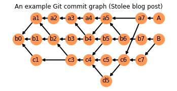
References
There is no single way of handling references and citations (bibliography) in Jupyter Notebook.
Some of the various solutions are presented below: - nbconvert examples :: Managing citations in the IPython Notebook - Writing academic papers in plain text with Markdown and Jupyter notebook by Sylvain Deville (2015) - use the Document Tools of the Calico suite: Calico Document Tools and BibTeX - cite2c extension for live citations in IPython notebooks, which uses Zotero as citations database, and rendering both bibliographies and inline citations in Markdown cells with the help of citeproc-js - use jupyter_latex_envs Jupyter extension to generate Reference section; note, that nbdev now only supports converting of BibTeX citations by the way of \cite{} to <a class="latex_cit" id="call-" href="#cit-"></a> via cite2link()
Therefore, for the time being, live / hyperlinked citations and automatically generated bibliography won’t be used.
The bibliography is currently generated by hand, and work are referred to by their nicknames, e.g. “the FELINE paper”.
[FELINE] Renê R. Veloso, Loïc Cerf, Wagner Meira Jr, Mohammed J. Zaki: “Reachability Queries in Very Large Graphs: A Fast Refined Online Search Approach”, Proc. 17th International Conference on Extending Database Technology (EDBT), March 24-28, 2014, Athens, Greece: ISBN 978-3-89318065-3,
http://openprocedings.org/EDBT/2014/paper_166.pdf
https://dx.doi.org/10.5441/002/edbt.2014.46[PReaCH] Florian Merz, Peter Sanders: “PReaCH: A Fast Lightweight Reachability Index using Pruning and Contraction Hierarchies”, arXiv:1404.4465v1 [cs.DS], 17 Apr 2014,
https://arxiv.org/abs/1404.4465[Stolee] Derrick Stolee: “Supercharging the Git Commit Graph II: File Format”, July 2nd, 2018,
https://devblogs.microsoft.com/devops/supercharging-the-git-commit-graph-ii-file-format/